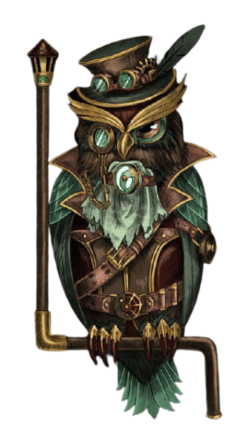
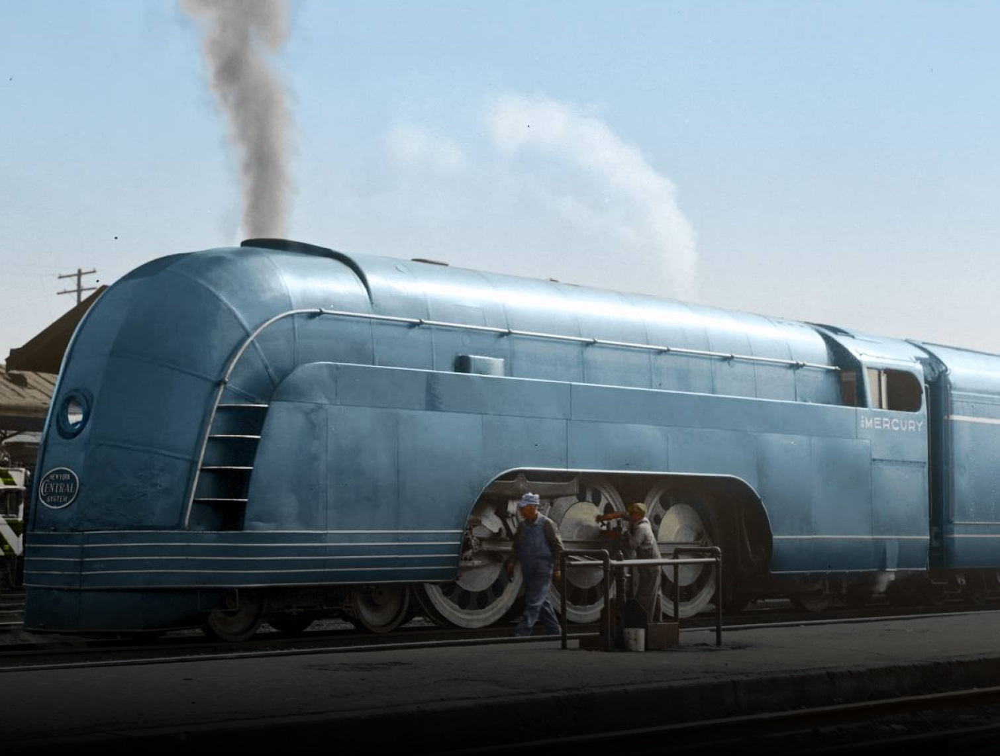
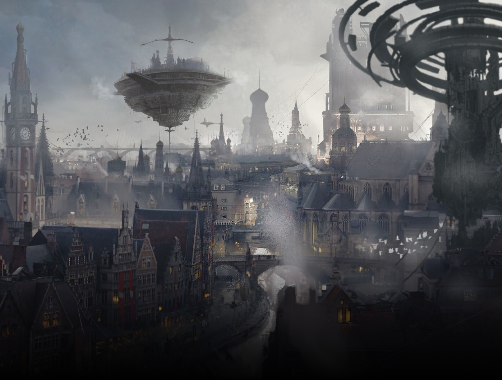

- Servizi -
La città è munita di servizi diversificati per soddisfare i bisogni dei cittadini. e si possono suddividere in due grandi macrocategorie.


Sono rivolti a soddisfare i bisogni di una comunità in termini di sviluppo sia economico che civile e di promozione sociale. Per questa ragione, l’erogazione dei servizi locali si ispira ai principi di uguaglianza, imparzialità, partecipazione e tutela degli interessi degli utenti: dunque tutti i cittadini devono poter essere messi in grado di usufruire di tali servizi in termini di qualità e di accessibilità del servizio stesso.